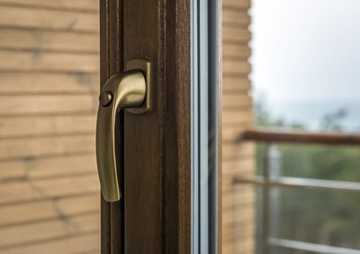

Plastikinių langų ir durų kaina | Sužinokite plastikinių langų ir durų kainą | TIKS langai
 Siekdami pagerinti Jūsų naršymo kokybę, statistiniais ir rinkodaros tikslais šioje svetainėje naudojame slapukus. Plačiau (privatumo politika) . SUTINKU
Bendrasis numeris: 8 800 22225
info@tikslangai.lt
Kaunas , Vilnius , Klaipėda , Šiauliai ir Panevėžys
Lietuvių English Prisijungti
Kontaktai Apie mus Apie “TIKS langus” D.U.K. Langai greitai arba pigiai Apie Vilių Eidukevičių Žaliosios energijos naudojimas STIPRIAUSI LIETUVOJE 2016 Karjera Partnerystė Privatumo politika PRODUKTAI Plastikiniai langai IDEALUS LANGAS – klientų siekiamybė Plastikiniai langai – parametrų palyginimas Plastikiniai langai – spalvų katalogas FutureART+ plastikiniai langai FutureART plastikiniai langai ThermoART plastikiniai langai TopART plastikiniai langai ClasicART plastikiniai langai StandART+ plastikiniai langai StandART plastikiniai langai NordART plastikiniai langai Plastikinės durys Dekoruotos plastikinės durys ir dekoruoti durų užpildai TIKS lauko durys TIKS vidaus durys TIKS stumdomos durys TIKS balkono durys Balkonų stiklinimas Balkonų stiklinimas plastiku Balkonų stiklinimas aliuminiu Aliuminio konstrukcijos NAUJIENA! Aliuminiai Top Swing tipo langai Aliuminiai langai ir durys Dekoruotos aliuminio durys ir dekoruoti durų užpildai Aliuminio stumdomos durys Aliuminio sulankstomos durys Terasų ir pavėsinių stiklinimas HI FINITY – stumdomos durys maksimaliam komfortui Priedai Kasdienio komforto priedai Saugumo priedai Antialerginės horizontalios ir vertikalios orlaidės Efektyvaus vėdinimo priedai Išskirtiniai stiklo paketai Tinkleliai nuo vabzdžių PASLAUGOS Konsultacija ryšio priemonėmis Langų ir durų angų matavimas Gaminių techninio projekto paruošimas Gaminių pristatymas Senų langų demontavimas Langų ir durų montavimas Senų langų naudingas panaudojimas Periodinė gaminių priežiūra Garantinis remontas Techninis aptarnavimas pogarantiniu laikotarpiu AKCIJOS Langai išsimokėtinai BE PALŪKANŲ tik su 0,69% administraciniu mokesčiu mėnesiui Langų išpardavimas tiesiai iš sandėlio Pasiūlymai tautiečiams užsienyje Pasiūlymai NT vystytojams ir renovuotojams AKTUALU Naujienos Stipriausi Lietuvoje 2017 STIPRIAUSI LIETUVOJE 2016 20 metų stengiamės labiau, kad 5 000 000 TIKS langų šildytų geriau! Naujos kartos idealus langas Skatiname langus rinktis pagal energetinį efektyvumą UAB „Aveplast“ pristatė savo produkciją užsienio rinkoms UAB „Aveplast“ pradėjo įgyvendinti projektą „UAB „Aveplast“ eksporto potencialo didinimas” „TIKS langai“ pelnė „Gazelės“ apdovanojimą UAB “Aveplast” sėkmingai įgyvendino ES remiamą projektą Patarimai Balkonų stiklinimas: šiuolaikiški sprendimai sename bute Plastikinės durys – kokios rūšys ir kaip išsirinkti? Plastikiniai langai : kaip teisingai išsirinkti savuosius? Aliuminio langai : kodėl verta rinktis? Langų rasojimas: kodėl tai vyksta? Energetinis efektyvumas – pagrindinis langų pasirinkimo kriterijus Mes spaudoje Statybos mitų griovėjai: aliuminio langai ir durys – nuo šiol ir privačioms valdoms? A+ klasės namas: langams keliami reikalavimai Terasos durys – neatsiejama šiuolaikinio būsto dalis Atsakingai pasirinktos įėjimo durys – Jūsų „vizitinė kortelė” Langai: ant taupymo ir efektyvumo svarstyklių Praktiški patarimai renkantis langus Kaip neapsirikti perkant plastikinius langus? Langų saugumas – kokie svarbiausi pasirinkimo kriterijai? Kai langų pasirinkimą nulemia žema kaina SVARBU ŽINOTI Taisyklės ir sąlygos Stiklų skilimą sąlygojančios priežastys. Stiklo paketų vizualinės kokybės vertinimas Orlaidžių naudojimo ir priežiūros taisyklės Garantijos ir garantinio aptarnavimo sąlygos Durų ir langų montavimas – kaip teisingai jį atlikti? Langų ir durų naudojimo bei priežiūros taisyklės Langų rasojimas – kodėl atsiranda ir kaip išvengti? Techniniai paaiškinimai Langai ir plastikinių profilių skirtumai Terminų žodynėlis ATSILIEPIMAI Padėkos Palikite atsiliepimą GALERIJA KOKYBĖ “TIKS langai” kokybės politika Informacija apie vartojimo ginčų neteisminį sprendimą Kontaktai Apie mus Apie “TIKS langus” D.U.K. Langai greitai arba pigiai Apie Vilių Eidukevičių Žaliosios energijos naudojimas STIPRIAUSI LIETUVOJE 2016 Karjera Partnerystė Privatumo politika PRODUKTAI Plastikiniai langai IDEALUS LANGAS – klientų siekiamybė Plastikiniai langai – parametrų palyginimas Plastikiniai langai – spalvų katalogas FutureART+ plastikiniai langai FutureART plastikiniai langai ThermoART plastikiniai langai TopART plastikiniai langai ClasicART plastikiniai langai StandART+ plastikiniai langai StandART plastikiniai langai NordART plastikiniai langai Plastikinės durys Dekoruotos plastikinės durys ir dekoruoti durų užpildai TIKS lauko durys TIKS vidaus durys TIKS stumdomos durys TIKS balkono durys Balkonų stiklinimas Balkonų stiklinimas plastiku Balkonų stiklinimas aliuminiu Aliuminio konstrukcijos NAUJIENA! Aliuminiai Top Swing tipo langai Aliuminiai langai ir durys Dekoruotos aliuminio durys ir dekoruoti durų užpildai Aliuminio stumdomos durys Aliuminio sulankstomos durys Terasų ir pavėsinių stiklinimas HI FINITY – stumdomos durys maksimaliam komfortui Priedai Kasdienio komforto priedai Saugumo priedai Antialerginės horizontalios ir vertikalios orlaidės Efektyvaus vėdinimo priedai Išskirtiniai stiklo paketai Tinkleliai nuo vabzdžių PASLAUGOS Konsultacija ryšio priemonėmis Langų ir durų angų matavimas Gaminių techninio projekto paruošimas Gaminių pristatymas Senų langų demontavimas Langų ir durų montavimas Senų langų naudingas panaudojimas Periodinė gaminių priežiūra Garantinis remontas Techninis aptarnavimas pogarantiniu laikotarpiu AKCIJOS Langai išsimokėtinai BE PALŪKANŲ tik su 0,69% administraciniu mokesčiu mėnesiui Langų išpardavimas tiesiai iš sandėlio Pasiūlymai tautiečiams užsienyje Pasiūlymai NT vystytojams ir renovuotojams AKTUALU Naujienos Stipriausi Lietuvoje 2017 STIPRIAUSI LIETUVOJE 2016 20 metų stengiamės labiau, kad 5 000 000 TIKS langų šildytų geriau! Naujos kartos idealus langas Skatiname langus rinktis pagal energetinį efektyvumą UAB „Aveplast“ pristatė savo produkciją užsienio rinkoms UAB „Aveplast“ pradėjo įgyvendinti projektą „UAB „Aveplast“ eksporto potencialo didinimas” „TIKS langai“ pelnė „Gazelės“ apdovanojimą UAB “Aveplast” sėkmingai įgyvendino ES remiamą projektą Patarimai Balkonų stiklinimas: šiuolaikiški sprendimai sename bute Plastikinės durys – kokios rūšys ir kaip išsirinkti? Plastikiniai langai : kaip teisingai išsirinkti savuosius? Aliuminio langai : kodėl verta rinktis? Langų rasojimas: kodėl tai vyksta? Energetinis efektyvumas – pagrindinis langų pasirinkimo kriterijus Mes spaudoje Statybos mitų griovėjai: aliuminio langai ir durys – nuo šiol ir privačioms valdoms? A+ klasės namas: langams keliami reikalavimai Terasos durys – neatsiejama šiuolaikinio būsto dalis Atsakingai pasirinktos įėjimo durys – Jūsų „vizitinė kortelė” Langai: ant taupymo ir efektyvumo svarstyklių Praktiški patarimai renkantis langus Kaip neapsirikti perkant plastikinius langus? Langų saugumas – kokie svarbiausi pasirinkimo kriterijai? Kai langų pasirinkimą nulemia žema kaina SVARBU ŽINOTI Taisyklės ir sąlygos Stiklų skilimą sąlygojančios priežastys. Stiklo paketų vizualinės kokybės vertinimas Orlaidžių naudojimo ir priežiūros taisyklės Garantijos ir garantinio aptarnavimo sąlygos Durų ir langų montavimas – kaip teisingai jį atlikti? Langų ir durų naudojimo bei priežiūros taisyklės Langų rasojimas – kodėl atsiranda ir kaip išvengti? Techniniai paaiškinimai Langai ir plastikinių profilių skirtumai Terminų žodynėlis ATSILIEPIMAI Padėkos Palikite atsiliepimą GALERIJA KOKYBĖ “TIKS langai” kokybės politika Informacija apie vartojimo ginčų neteisminį sprendimą
Langų ir durų kainos skaičiuoklė
Pasinaudokite mūsų skaičiuokle ir sužinokite plastikinių langų ir durų kainą.
Sveiki, esu Regina.
Turėdami klausimų
ar norėdami atsiųsti užklausą, galite kreiptis į mane.
+370(656)13218
uzklausos@aveplast.lt
Apie gaminius
Langai Durys Balkonų stiklinimas Aliuminio konstrukcijos Langų priedai PaslaugosApie TIKS langus
Pradžia Apie mus Palikite atsiliepimą “TIKS langai” kokybės politika Karjeros galimybės D.U.KKontaktai
KAUNAS (centrinė būstinė) Statybininkų g. 7
tel. (8-37) 46 00 39, (8-37) 46 00 40,
el. paštas: info@tikslangai.lt
Darbo laikas:
I-IV 8:00-18:00; V 8:00-17:00
I. Šimulionio g. 3, Vilnius
(įėjimas tarp 3-čio ir 5-to namo)
tel. (8-5) 233 08 85
el. paštas: vilnius@tikslangai.lt
Darbo laikas: I-V 8.00 - 17.00
Dubysos g. 25, kab. 201
mob. tel. +370 685 34 169,
el. paštas: klaipeda@tikslangai.lt
Darbo laikas: I-V 8.00 - 17.00
Aido g. 45,
tel. (8-41) 55 02 01,
mob. tel +370 652 14313
el. paštas: siauliai@tikslangai.lt
Darbo laikas: I-V 9.00 - 18.00
J.Basanavičiaus g. 32,
tel. (8-45) 43 02 83,
el. paštas: panevezys@tikslangai.lt
Darbo laikas:
I-IV 8:00 - 18:00; V 8:00 - 17:00
Tel: (8-315) 55 956, (8-614) 82 602
alytus@tikslangai.lt
Baisogala:
Maironio g. 46,
Tel: (8-687) 84 324
baisogala@tikslangai.lt
Biržai:
Kęstučio g. 24,
Tel: (8-686) 08 179
birzai@tikslangai.lt
Klaipėdos raj.:
Žvelsėnų g.5, Žvelsėnų km. Klaipėdos raj.
Tel: (8-604) 24 788, (8-645) 75 985
klaipedosraj@tikslangai.lt
Joniškis:
Livonijos g. 7,
Tel: (8-612) 22941
joniskis@tikslangai.lt
Kaišiadorys:
Girelės g. 12,
Tel: (8-346) 67 060,
mob. (8-613) 19 288
kaisiadorys@tikslangai.lt
Kuršėnai:
J. Basanavičiaus g. 8,
Tel: (8-601) 11104
kursenai@tikslangai.lt
V. Kudirkos g. 14, Kuršėnų m.
Tel: (8-684) 84 060
Lentvaris:
Geležinkelio g. 19,
Tel: (8-528) 28 768, (8-616) 00 104
lentvaris@tikslangai.lt
Linkuva, Pakruojo raj.:
Dariaus ir Girėno g. 12,
(8-615) 90 043
linkuva@tikslangai.lt
Šilalė-Tauragė:
Tel. nr. 8 650 45533
info@tikslangai.lt Visos teisės saugomos UAB "Aveplast"© 2020 Sprendimas UAB "Ainera"